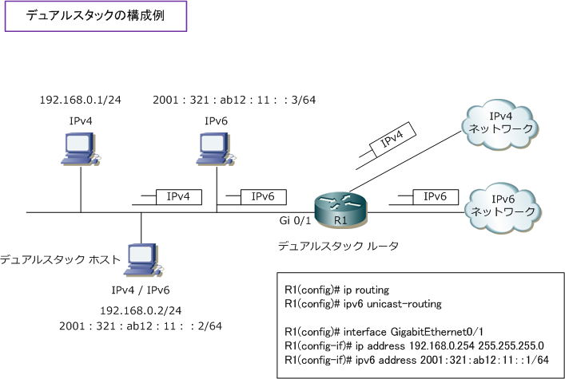
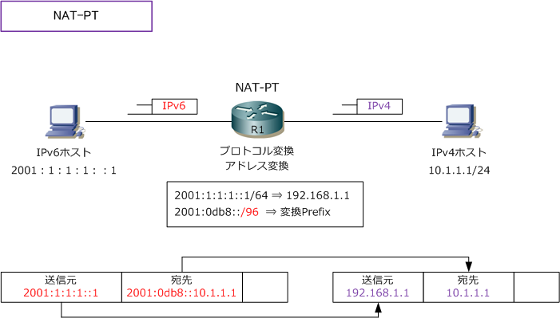

IPv6 - Dual Stack / NAT-PT
IPv4ネットワークからIPv6ネットワークへの移行
IPv4からIPv6ネットワークへいきなり全てのシステムを切り替えるのは現実的ではなく、段階的な移行が 必要とされます。IPv6への移行に際して使用される代表的な技術は大きく3つあります。デュアルスタック、 トランスレータ、トンネリングです。これらの技術を実装することでIPv4とIPv6が併存することができます。
IPv6移行技術 - デュアルスタック
デュアルスタックとは、単一の機器に、IPv4とIPv6の異なるプロトコルスタックを共存させる仕組みのこと。 Ciscoルータでは、1つのインターフェースにIPv4アドレスとIPv6アドレスの両方を設定することができます。 デュアルスタックのルータがパケットを受信した場合、データリンク層のヘッダにあるタイプフィールドの値 によって識別 (IPv4=0x800、IPv6=0x86DD) して、IPv4、IPv6のどちらのパケットでもルーティング可能。 デュアルスタックによるIPv6移行技術が最もシンプルで設計がしやすく、一般的に採用されている手法です。

IPv6移行技術 - トランスレータ
トランスレータは「IPv4からIPv6への通信」または「IPv6からIPv4への通信」を実現するための技術。 このトランスレータの代表的な方式にはProxy方式、NAT-PT方式、TCP Relay方式の3つがあります。
| トランスレータ方式 | 説明 |
|---|---|
| Proxy | IPv4のプロキシ同様に、アプリケーションごとに送信元の代理となり宛先へ通信する方式 |
| NAT-PT | プロトコル変換とアドレス変換を同時に行い、IPv4とIPv6間を相互に通信する方式 |
| TCP Relay | トランスレータがTCP/UDP通信を横取りし、代理となりトランスポート層のデータを取得し通信する方式 |
今回はNAT-PTを詳細に解説します。NATはIPv4アドレスのプライベートアドレスとグローバルアドレス変換 の際によく使用する技術ですが、NAT-PT（NAT-Protocol Translation）は、IPv4パケットをIPv6パケットに プロトコル変換するのと同時に、IPv4アドレスをIPv6アドレスにアドレス変換する技術です。NAT-PTでは、 DNS-ALG（RFC2764）と組み合わせて使用します。※アプリ層のペイロード部分を変換できない問題点あり。

Ciscoルータで、IPv6プレフィックスをNAT-PTプレフィックスとして割り当てる場合は ipv6 nat prefix コマンドを使用しますが、サポートされるプレフィックスの長さは「 /96 」だけとなります。次の通り に設定することで、IPv6パケット内で一致した宛先プレフィックスは、NAT-PTによって変換されます。
(config)# ipv6 nat prefix 2001:0db8::/96
CiscoルータでNAT-PTを実装させるためには、その他に「IPv4 ⇔ IPv6マッピング」の設定が必要です。 なお、CiscoルータではNAT-PTの使用は推奨されていません。今後は NAT64 の使用を推奨しています。